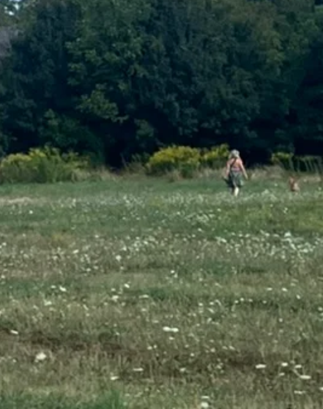

Nem volt olyan rég, hogy R. esete bejárta a sajtót – tudjátok, ő az a képzőművészetis hallgató, akit évekkel korábban megerőszakolt egy diáktársa. Az áldozat jogi képviselője szerint végül azzal az indoklással mentették fel a férfit, hogy a beleegyezés hiánya önmagában még nem teszi nemi erőszakká a történteket, ráadásul a nő nem ellenkezett elég hangosan (!) a férfival szemben.
Annak ellenére, hogy az ítélet hatalmas felháborodást keltett, a bírónak jogi értelemben igaza van: a magyar jogszabályok szerint ugyanis csak akkor beszélhetünk szexuális erőszakról, ha az fizikai kényszerítés, fenyegetés vagy az áldozat cselekvőképtelensége mellett valósul meg – más esetben nem.
Így hát nem erőszak, ha nem egyezel bele. Nem erőszak, ha előtte kinyitod a kollégiumi szobád ajtaját, nem erőszak, ha lefagysz, ha a tudatod lezár, ha nem tiltakozol eléggé vagy elég egyértelműen. Hogy kinek tiszte megítélni, hogy mi az elég? Az legtöbbször a vakszerencsén múlik.
Amikor először beszéltem az engem ért erőszakról, szerencsém volt. Olyan nyomozóhoz került az ügyem, aki – a rendszer adta keretekhez képest – empátiával fordult hozzám. Aki a kihallgatás során elnézést kért, mielőtt feltette a kötelező kérdést, elmondta, hogy nem hibáztat, de az ügyészség mindenképp meg fogja kérdezni, hogy miért maradtam hónapokig a kapcsolatban.
Volt tér, hogy beszéljek arról, amire egyértelmű bizonyítékom volt, és tett érte, hogy meséljek arról is, amire nem. Például, amikor Ádám megerőszakolt. Nem mentem orvoshoz, nincs róla ambuláns lapom, csak egy barátnőmnek meséltem az esetről, aki ezután törölte Ádámot az ismerősei közül. Felelősségvállalás helyett viszont az ezzel kapcsolatos számonkérés maradt csak – meg a narratíva, hogy senkinek semmi köze hozzá.
Később egy másik barátnőjét is megerőszakolta, volt róla vallomás, jegyzőkönyv a részletekről, térben és időben is összeállt a történet, ráadásul az áldozatok egymástól független, mégis nagyon hasonló megélései egymást erősítették. A kihallgatás során Ádám mégis azt mondta, hogy konszenzusos együttlét volt, a lány durván szereti. Ez pedig magánügy, ugye, olyan, amihez – ekkorra már tudtuk jól – másnak nincs köze. Hiszen nincs szemtanú, fotó, ambuláns lap vagy látlelet, beismerés nélkül pedig súlytalan minden, amit az áldozatok állítanak.
Tegnap aztán hatalmasat fordult a világ – sokunkkal legalábbis. Az EP-képviselők felszólították a tagállamokat, hogy a nemi erőszak meghatározásával kapcsolatos jogszabályaikat hangolják össze a nemzetközi normákkal. Egyrészt álljunk itt meg egy pillanatra, és ízlelgessük, hogy vannak nemzetközi normák (meg ezekre épülő törvények, például Franciaországban). Az EP-képviselők szerint ugyanis a beleegyezést minden esetben a körülmények figyelembevételével kellene vizsgálni, beleértve például a fenyegetést, a hatalommal való visszaélést, a megfélemlítést, a tudatmódosult állapotot, az elkábítást, az alvást, a betegséget, a fogyatékosságot vagy a kiszolgáltatottságot. Másrészt hangsúlyozták azt is, hogy a traumára adott reakcióknak – így a nagyon gyakori lefagyásnak is – tükröződniük kell a jogszabályokban és a bírósági gyakorlatban.
Néhány héttel ezelőtt Románia hozott olyan törvényt, amely jogi értelemben határozza meg a nőgyilkosság fogalmát, a nők elleni erőszak megelőzése érdekében pedig az iskolai tananyag részévé válnak olyan témák, mint a nemek közötti egyenlőség, a nők elleni erőszak formái, valamint a békés, erőszakmentes kapcsolatok etikája a családban, a közösségben és a társadalomban.
Pardon? Hogy a rendszerváltás elérte volna a nők ügyeit is? Tessék mondani, ez ugyanaz az Európa, mint ami néhány éve az abortusz szigorításától volt hangos? Óvatosan húzom ki a kezem a biliből, szeretném azt hinni, hogy igen.
Szeretném hinni, hogy elértük a gödör alját, és innen már csak felfelé visz az út. Egy olyan helyre, ahol számít az ember, számít a tapasztalat, és a szakértők szava is legalább annyit, mint az áldozatoké. Ahol a beleegyezés a kérdés, nem a védekezés, és ahol vigyázunk egymásra, vigyáznak ránk. Ehhez viszont nemcsak olyan törvények kellenek, amik ezt tükrözik majd. Legalább ennyire kellünk mi is, a szemléletváltás, hogy van közünk hozzá. Hogy ne a vakszerencsén múljon az áldozatok sorsa.